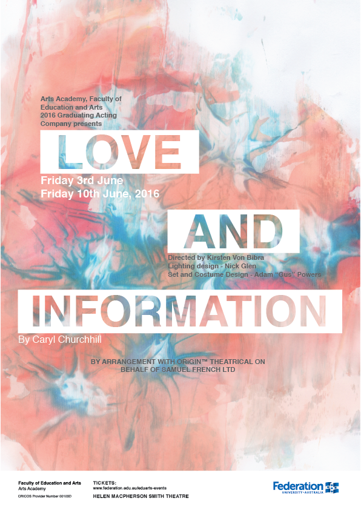

|

|
The idea behind my design was to use food dye to make a background that
looked like neurons in the brain with the use of shaving cream and food dye,
I produced 20 different designs with different colours including blue, red,
yellow and green this created a unique range of designs when the colours
mixed by using only 2 or all 4 in my backgrounds.
I then scanned each image into the computer and chose my favourite 3 that
stood out the most, after photo shopping the chosen 3 I placed the 'Love and
Information' text on top of the backgrounds to see which text and background
worked the best. The orange and blue looked the most appealing and with the
white spaces within the background worked well with the text. I then made
different posters with the text in different spaces, colours and sizes,
finding one I liked best.
|